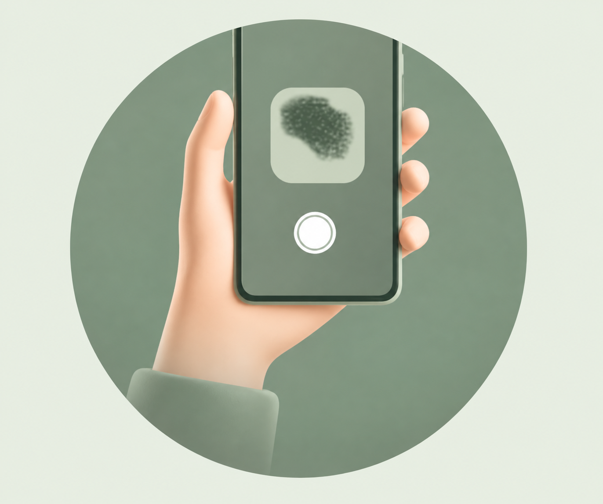
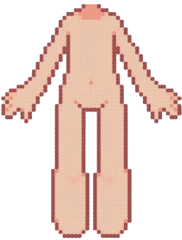

STEP 1

Take a clear photo
Choose a face or body scan, then upload a well-lit, focused photo.
A guided photo check-in for your face or body, with clear insights to help you understand what you’re seeing.

Choose where to begin. We’ll guide you through a clear photo check and show an example of the kind of information you can review.

Choose a face or body scan, then upload a well-lit, focused photo.
The photo is checked for quality, then reviewed for visible skin patterns.
Read a simple summary of your scan and save it to your history.
Ask the AI assistant to explain your summary and share general skincare suggestions.
Keep your past check-ins together and revisit them as your routine changes. Your skin journey is personal; your insights should be easy to understand.
See how it worksBrowse a product guide alongside your insights. Recommendations can reflect your preferences and the details you choose to share.
A simple first step
Explore everyday options
Compare product details